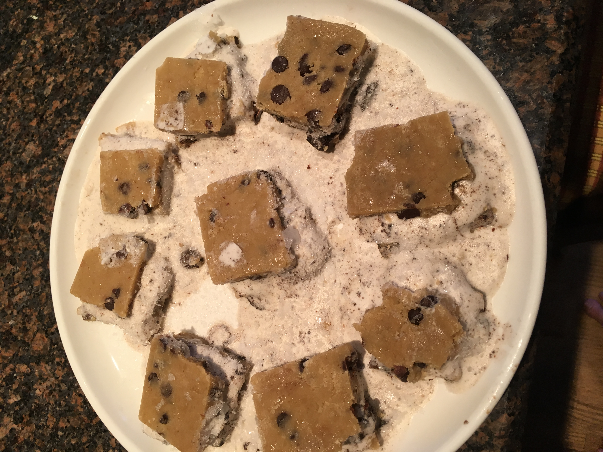
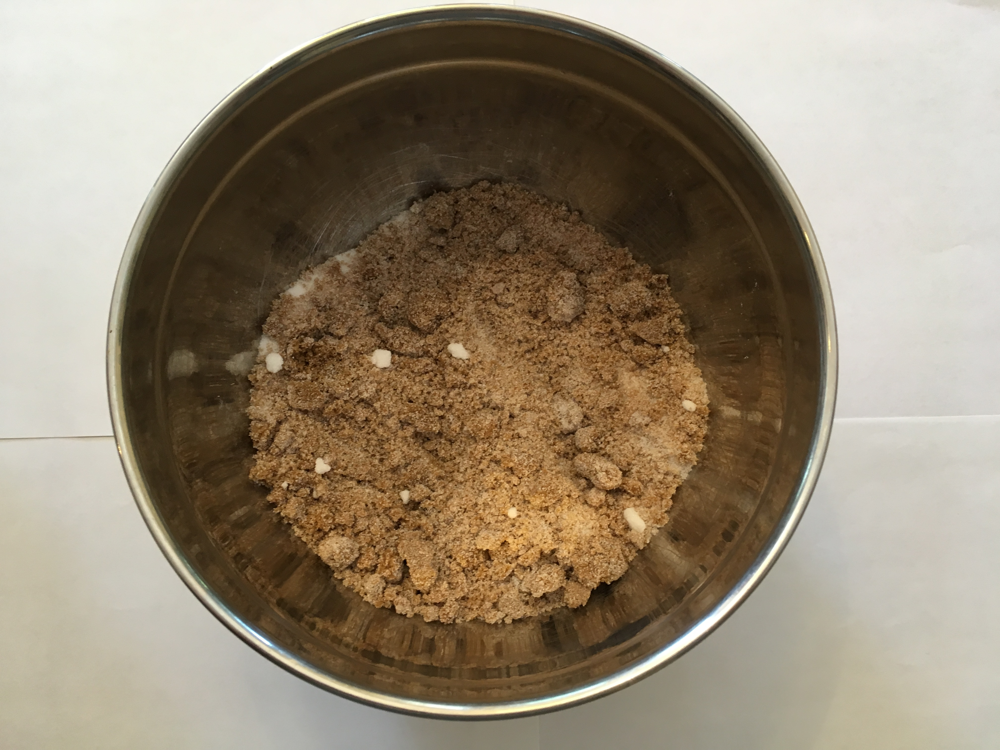
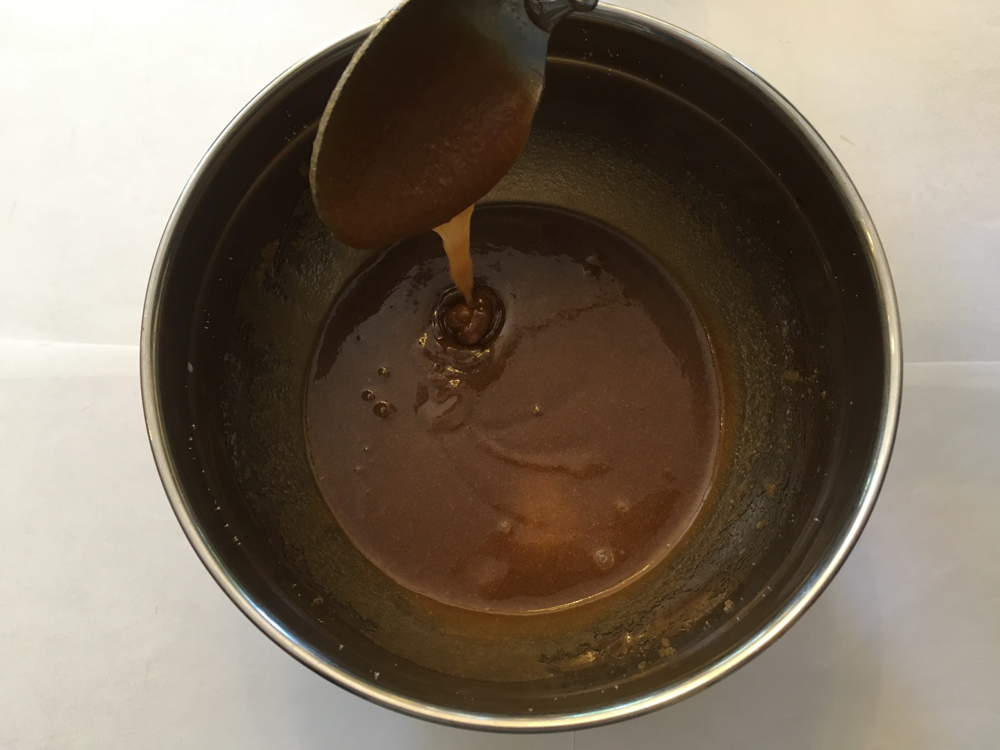
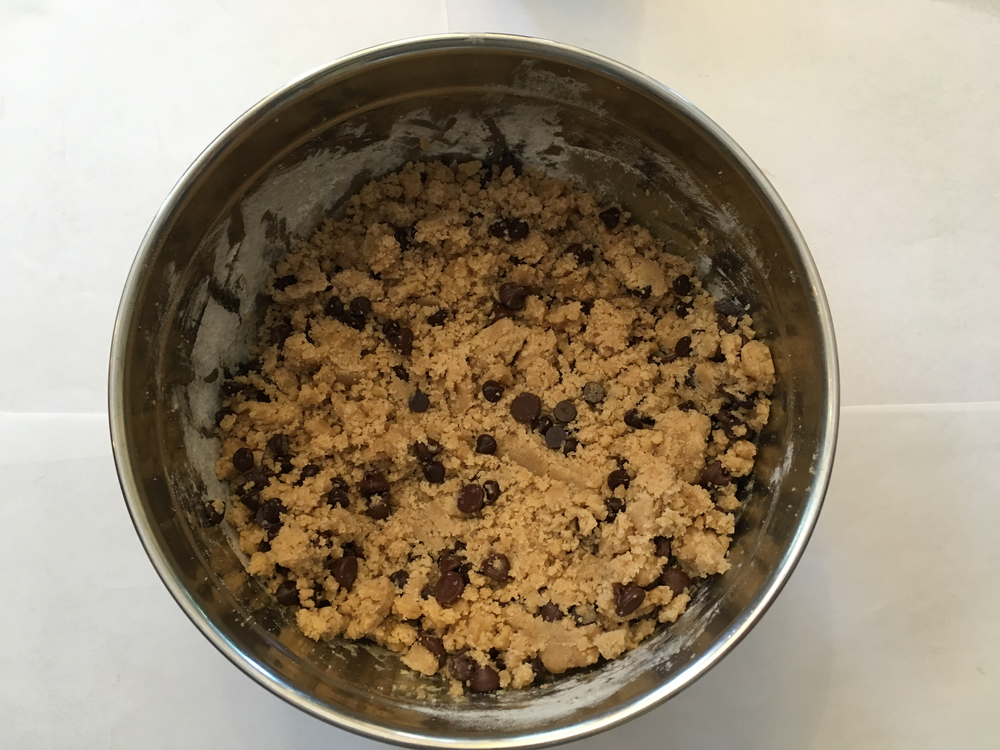
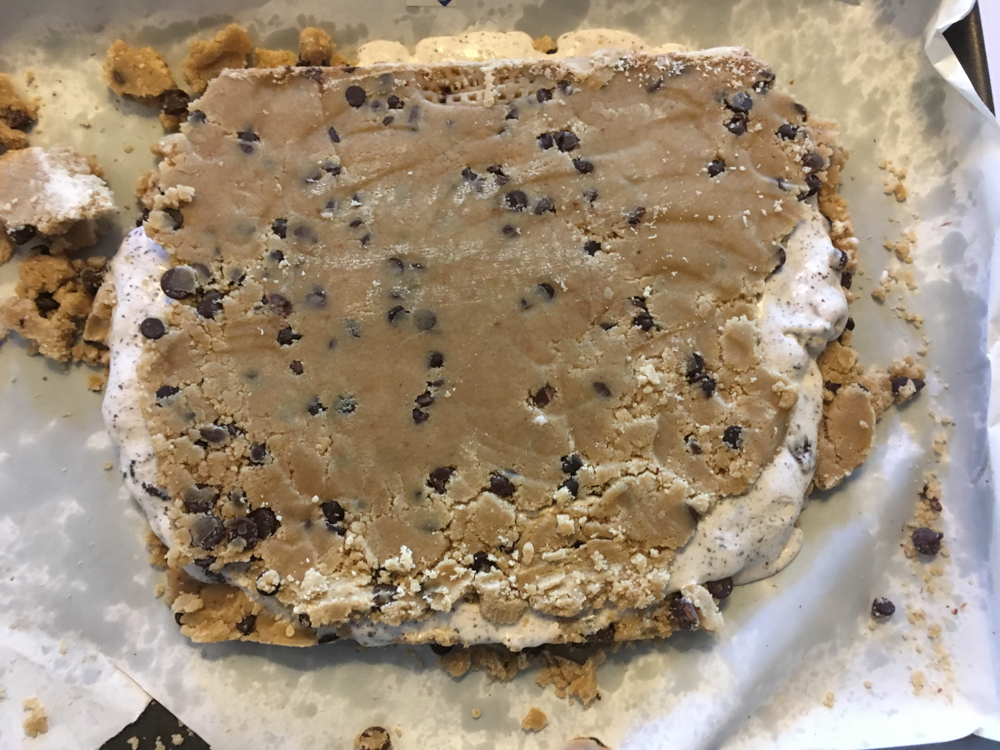

The Cookie Dough Ice Cream Sandwich is the ultimate desert. This is the perfect sandwich for a warm summer day. This sandwich takes a hefty 5 hours and 25 minutes in total to make.
Line a large baking sheet with parchment paper, leaving overhang on sides. In a large bowl, stir together melted butter, both sugars, milk, and vanilla until combined. Stir in flour and salt, then fold in chocolate chips.
Press cookie dough into prepared baking sheet, evening it out as much as possible (a cutting board can help). Top with a second piece of parchment and freeze until firm, 1 hour.
Remove cookie dough from pan and place on a cutting board. Slice dough down the center. Scoop ice cream on one half, then gently place other half of cookie dough on top. Transfer back to pan and freeze at least 4 hours and up to overnight.
Slice into sandwiches and serve.
